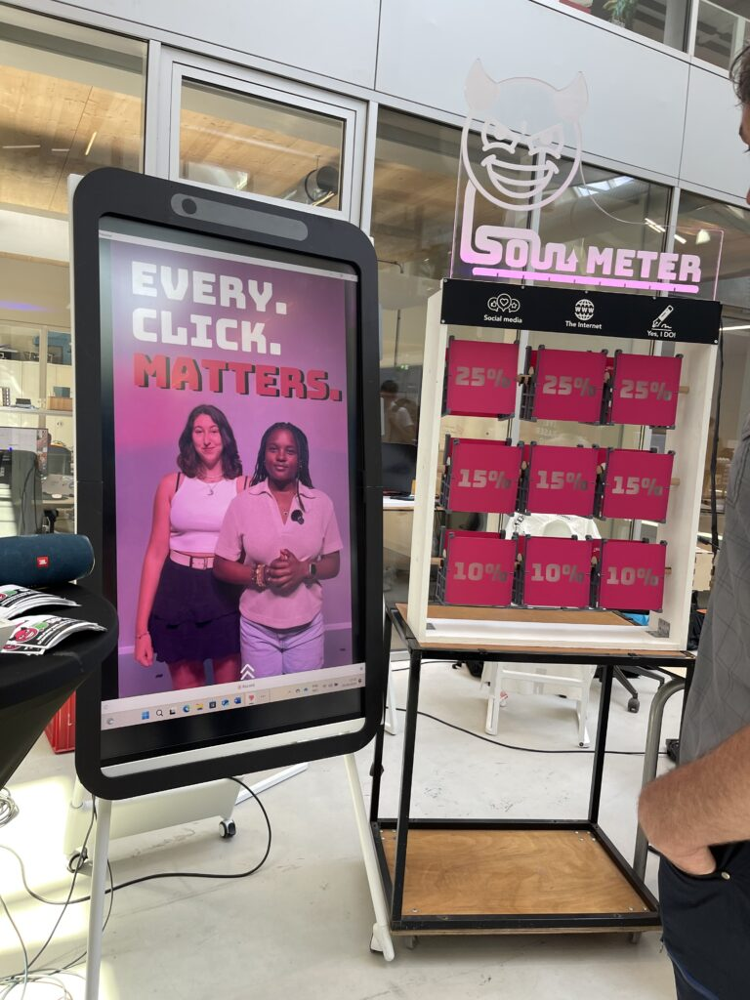
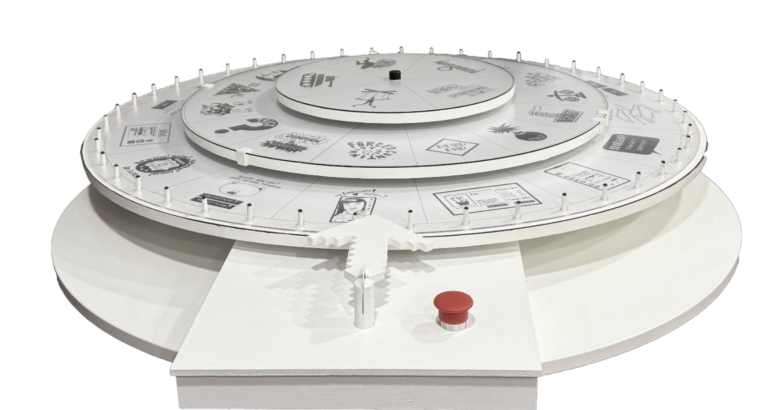
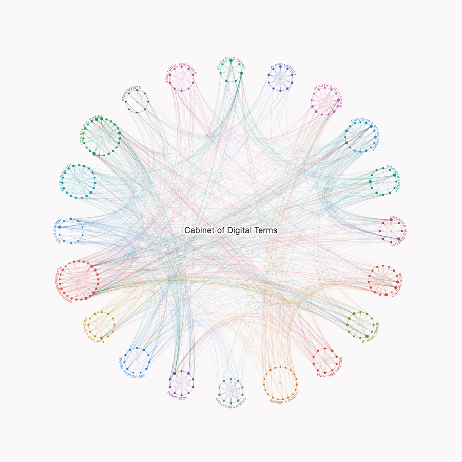
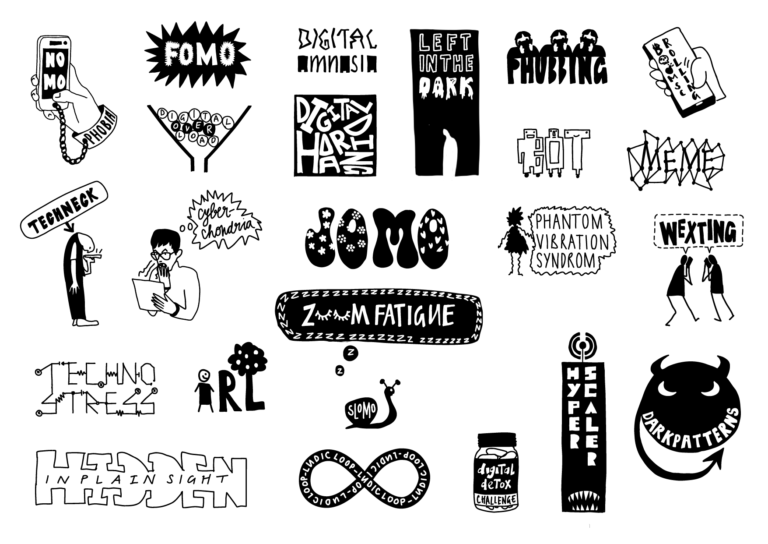
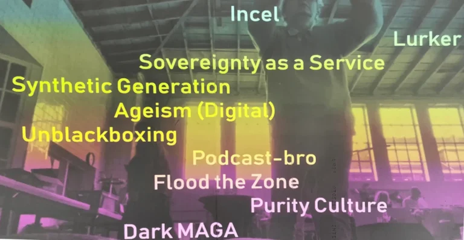
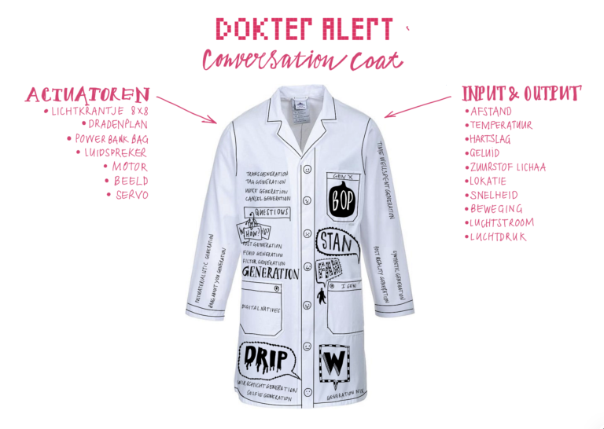
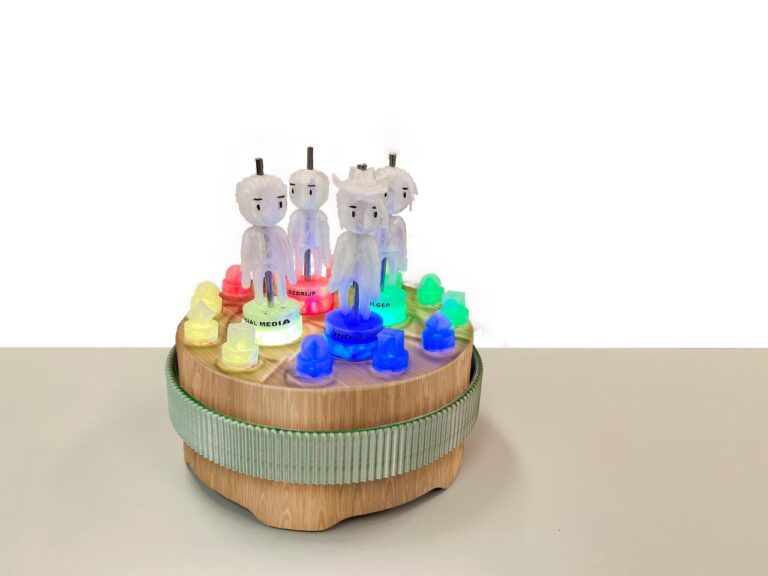
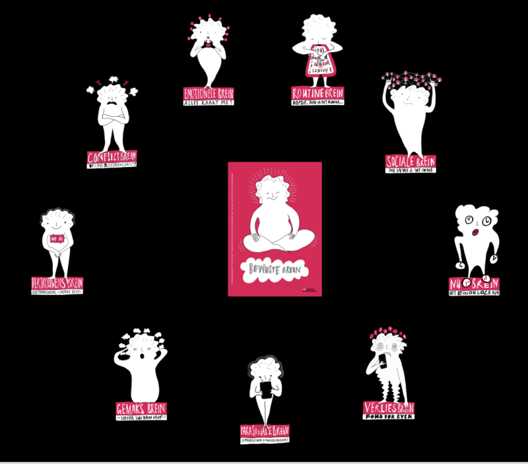
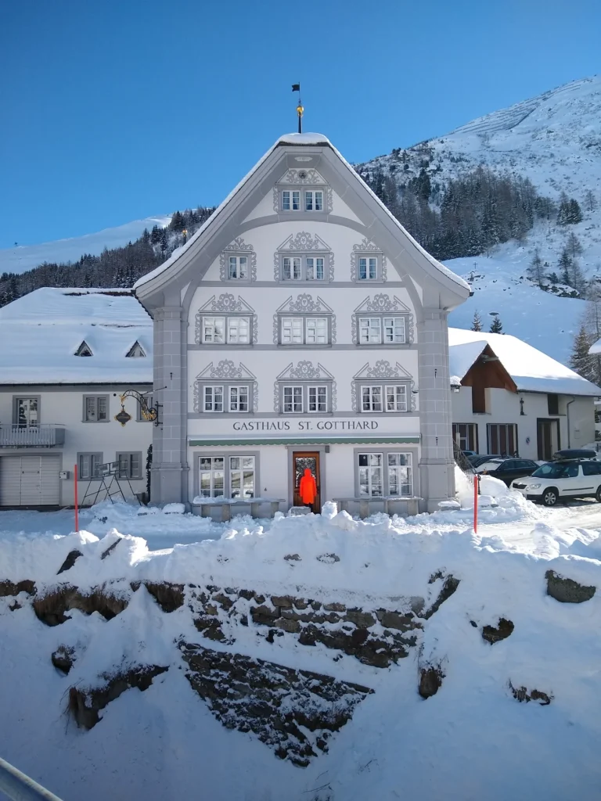

D.Alert is Dr. Alert, the project's alter ego, who investigates how technology influences our attention and choices.
Project Digital Alertness
The Cabinet is one of the project's Conversation Pieces: artefacts that let people feel a form of digital manipulation before it is named, so that they recognise it in the moment and start talking about it.
The ecosystem of the Cabinet
Narrative Typography's illustrations also appear in the Cabinet and on the rings of the Wheel of Dark Patterns.
Why the Conversation Pieces
"Knowing that platforms manipulate is one thing. Feeling it in the moment is another, and acting deliberately requires both."Staging Digital Friction
Each piece is also a knowledge product: research shapes the artefact, and what people say when they meet it goes back into the research.
"By making the crossing from knowing to feeling playable, it brings research on dark patterns into everyday experience."Staging Digital Friction, a paper by Marieke de Vogel, Wouter Sluis-Thiescheffer and Jasper Jeurens (HAN University of Applied Sciences, Media Design Research Group, 2026) on the Conversation Pieces, with a pilot of the Soulmeter among players aged 14 to 66.
The Conversation Pieces

SoulmeterInstallation · teenagers and adultsA quiz board beside a life-size smartphone, where every wrong answer costs part of your soul. How much of your soul have you sold to the internet?
Wheel of Dark PatternsPhysical and digital wheel · general publicThe dark patterns in three rings. Spin, match, recognise the manipulation.
Cabinet of Digital TermsWeb-based knowledge bank · adultsA network of terms to click, search and follow. You are here.
Narrative TypographyIllustrated two-sided cards · across the collectionThe image first, the definition on the back. The form of a word reveals its meaning before you read it.
Term SeekerInteractive installation · general publicDigital terms drift past, and you reach out with your hand to catch one. Reach for a term, receive a provocation.
Doctor Alert: The Digital Banner CoatWearable · general publicA lab coat printed with digital terms, with a pulsing light. The body as message.
Rad van RollenRole-play game · children, Grade 7A rotating wheel and 3D characters, in which children speak for big tech. Dark patterns translated into a language children can debate.
Mind Trick MachineWorkshop · adultsBrain cards and cards on current topics. Nine metaphorical brains, from dark patterns to dark encounters.
The Non FluencerLarge prints · general publicPlaced in non-places, where people pass through without stopping. Refusing the logic of the algorithm.Get in touch
Interested in the research, in using the Cabinet in teaching, or in contributing? Write to info@digitale-alertheid.nl, or visit digitale-alertheid.nl.